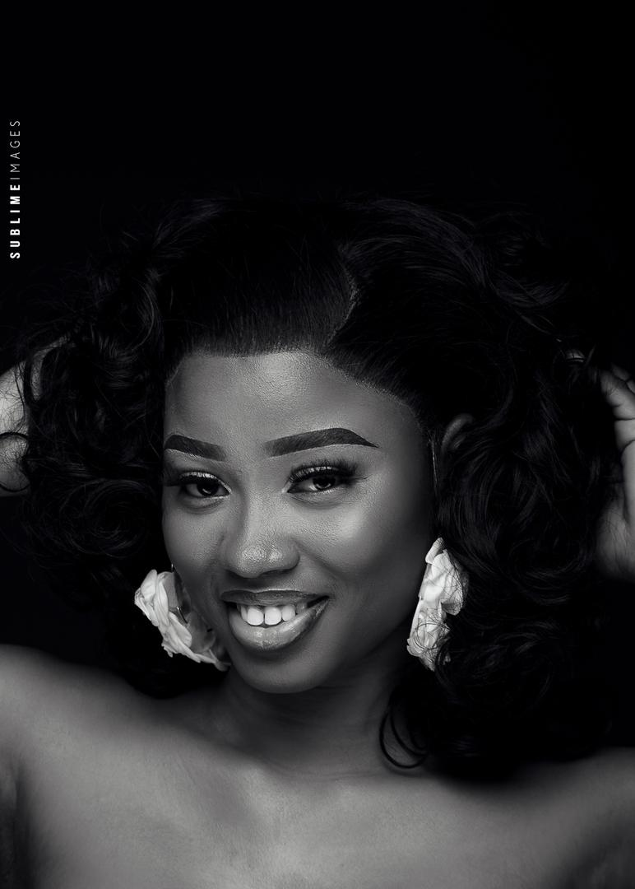

Nom : MOUSSE
Prénom : Ridollah Adjokê
Sexe : Féminin
Contact : +2290194504682
Mail : ridishmousse@gmail.com

Cliquez sur la photo pour revenir à la page précédente.
Étudiante en deuxième année de Réseau Informatique, Mobilité et Sécurité à PIGIER BÉNIN, je développe progressivement mes compétences techniques et professionnelles dans le domaine. Mon parcours me permet d’acquérir des connaissances solides et variées, grâce à une formation complète et à des expériences enrichissantes. Je m’investis pleinement dans mes projets avec motivation et professionnalisme. Mon objectif est de continuer à progresser, à apprendre des autres et à effectuer des stages académiques et professionnels, principalement dans le domaine du réseau et de la sécurité. À long terme, j’aimerais devenir administratrice réseau au sein d’une grande institution, peut-être même au ministère de la technologie. Je reste ouverte à toutes les opportunités qui correspondent à mes aspirations et à mon parcours académique et professionnel.